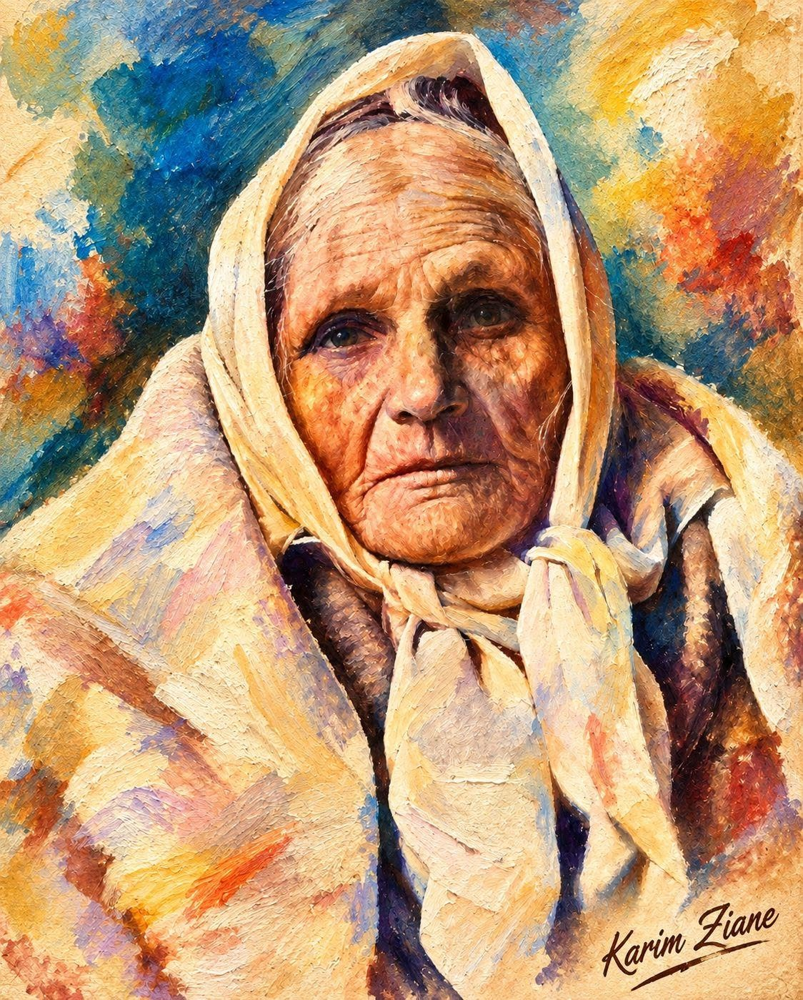

Fadhma, mémoire de lumière
Dans le silence austère
de ton visage,
il reste
des montagnes,
des chemins
de poussière
et de lumière,
des voix anciennes
que le temps
n’a jamais réussi
à faire taire.
Fadhma,
ton regard porte
le poids des saisons,
mais aussi
la braise secrète
d’un peuple
qui refuse l’oubli.
Chaque ride
est une page,
chaque pli
de ton étoffe,
un fragment
de mémoire.
Tu viens
de ces terres
où les femmes
gardent
dans leurs mains
les secrets
des maisons,
les berceuses,
les deuils,
les chants transmis
à voix basse
comme on protège
une flamme du vent.
Ton visage
ne demande rien.
Il raconte.
Il raconte
l’exil
et la fidélité,
la langue perdue
et retrouvée,
la douleur
devenue chant,
la solitude
devenue héritage.
Sous ton foulard clair,
on devine la Kabylie,
ses villages accrochés
aux montagnes,
ses oliviers,
ses pierres,
et le bleu immense
du ciel
où montent encore
les voix des anciens.
Fadhma,
mère de mémoire,
ton silence
est une poésie
que nul livre
ne pourrait contenir.
Et si le temps
a creusé ton visage,
il n’a pas vaincu
ta lumière.
Car certaines femmes
vieillissent avec les années ;
d’autres deviennent,
peu à peu,
la mémoire même
de leur peuple.
Tu es de celles-là.
Djamel Metref
At Yenni le 13 Août 2026
lien dinspiration https://www.facebook.com/photo/?fbid=122132049147174861&set=a.122098303647174861
← Tous les poèmes
Fadhma, mémoire de lumière
Mémoire et transmission · Exil et solidarité